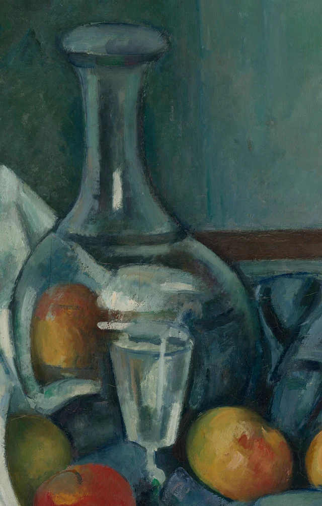
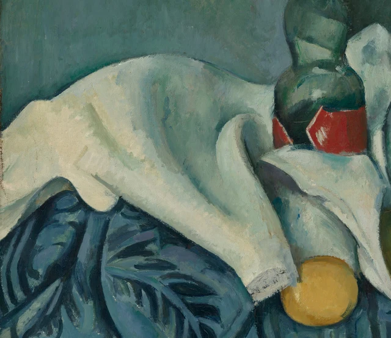
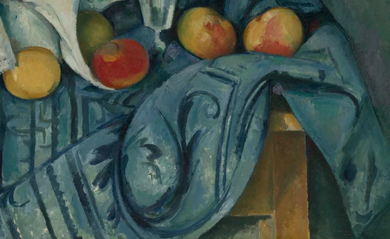

Le bleu-vert est presque partout. Il couvre le mur du fond, contourne l'épaule de la carafe, se glisse dans les plis du linge blanc et envahit l'étoffe à motifs du premier plan. Reconnaître le mur, les bouteilles et le tissu est assez facile. Le plus difficile est de rester devant une petite plage de couleur : pourquoi la forme chaude dans la carafe ressemble-t-elle à un fruit tout en appartenant au verre ? Une courbe sombre dans le tissu bleu est-elle un motif, ou l'endroit où l'étoffe se replie ?

Ce qui rend cette nature morte si durablement intéressante, selon cette lecture, c'est que la couleur continue de changer de rôle une fois les objets reconnus. Une petite plage rouge peut évoquer un fruit ou devenir une couleur vue à travers le verre ; une ligne bleu foncé peut dessiner un motif tout en aidant un pli à descendre. Cézanne n'attribue pas à chaque matière un ensemble fixe de signes. Il faut suivre les bords, les plages colorées et les formes voisines pour découvrir ce que fait ici une touche particulière.
Le tableau date des années 1890. Cézanne avait déjà exposé avec les impressionnistes et, encouragé par Camille Pissarro, adopté une palette plus claire et travaillé en plein air. Dans ses natures mortes, il étudiait depuis longtemps la manière de construire un volume par des tons voisins, en reprenant et en réagençant des objets familiers. Ce contexte suffit ici à orienter le regard : les ustensiles ordinaires offraient un champ de travail durable sur la couleur, la forme et la position. Avant de suivre l'influence du peintre sur ses successeurs, regardons comment cette bouteille-ci tient debout. La pratique de Cézanne ; ses natures mortes
1 Du bleu du mur au bleu de la bouteille
Dans la moitié supérieure, le mur laisse beaucoup de place au bleu-vert. Un peu plus clair à gauche, il s'assombrit en une zone verticale derrière la carafe, avant de s'élargir à droite en une surface plus lumineuse. Les traces de pinceau y font varier la couleur sans lui donner le volume mouvementé du tissu. Une bande brune horizontale, à droite, apporte une limite à ces plages qui s'étendent. Le musée y voit, avec prudence, une possible moulure de protection murale. Inutile de reconstituer toute l'architecture de la pièce pour sentir un plan en retrait.
Déplaçons les yeux vers le col de la carafe. Lui aussi est fait de bleu, de gris-vert et de tons sombres. Mais ces couleurs sont contenues dans une forme longue et étroite. Les contours se resserrent sous l'ouverture évasée, puis s'écartent progressivement en descendant vers le corps. Des bandes pâles suivent le col ; entre elles, une petite touche presque blanche accroche vivement la lumière. La couleur reçoit des limites et une direction. Les tons froids dispersés sur le mur se rassemblent en un objet dressé.
L'ouverture mérite que l'on s'y attarde. C'est un ovale clair, horizontal, bordé au-dessous par une ligne sombre. Son expansion latérale répond à l'élancement vertical du col. Plus bas, les deux contours s'écartent aux épaules, tandis qu'une bande foncée entoure la jonction du col et de la panse. L'étroitesse, l'arrondi, le renflement apparaissent à des rencontres précises entre plages colorées. La forme ne dépend donc pas d'un seul trait de contour dont le bleu remplirait simplement l'intérieur.
Le fond participe activement à cette construction. Si le mur était partout aussi clair derrière la carafe, les bords pâles du verre ne se dégageraient pas aussi nettement. S'il était uniformément noir, le lien de couleur entre l'objet et la pièce serait affaibli. Ses variations actuelles font émerger le contour à certains endroits et le rapprochent ailleurs des tons environnants. La carafe se distingue tout en restant dans cet espace de couleurs froides.
2 De la couleur pour rendre le verre transparent
La panse de la carafe n'est pas laissée vide. À gauche, un ovale jaune-orangé et brun-rouge donne l'impression que la couleur d'un fruit voisin est entrée dans le verre. Des bandes blanc laiteux et gris-bleu traversent le centre ; à droite, les tons se rapprochent de ceux de l'étoffe bleue située derrière. Ce sont des indices de transparence et de reflet. La reproduction ne permet cependant pas d'attribuer à chaque touche une origine optique unique et certaine.

La sensation de transparence naît de cette diversité. L'œil suit les contours pour reconstituer un récipient, tout en reconnaissant à l'intérieur des couleurs venues de son environnement. La carafe possède une surface, mais semble aussi laisser le regard la traverser. La courbe pâle du bas, à gauche, joue un rôle particulièrement net : elle contient l'ovale chaud et rejoint une zone bleu sombre. Une plage qui pourrait passer pour un fruit indépendant se trouve ainsi inscrite dans la courbure du verre.
Le verre à pied, devant, est construit avec moins de moyens. Un ovale clair marque son bord ; ses côtés se rétrécissent vers le bas ; des touches verticales presque blanches traversent le gris-vert. Les tons intérieurs ne sont pas uniformes, et la lumière ne dessine pas un contour continu tout autour. Un court segment de la tige apparaît plus bas dans le bleu foncé, avec une touche verdâtre à la jonction. Ces signes suffisent à faire lire un verre mince et droit.
La carafe se déploie par de larges courbes et des bandes horizontales ; le verre à pied s'avance par ses bords lumineux et étroits. Près de son ouverture, plusieurs traces claires se serrent. Isolée, une touche est difficile à attribuer à l'un des récipients ; le resserrement des parois vers le bas nous aide à retrouver le verre. La transparence n'est donc pas une propriété de chaque plage de couleur prise séparément. Des taches qui paraissent solides, voire ressemblent à des fruits, contribuent à l'apparition du verre par leurs rapports avec le bord de la carafe et les bandes claires voisines.
3 Le linge blanc plie les mêmes couleurs
Le linge constitue la plus grande zone claire du tableau, alors que peu de passages sont proches d'un blanc pur. Le large renflement de gauche tire sur le crème ; en tournant vers le creux, il devient gris-bleu. Près de la bouteille, un pli recourbé présente un dehors clair et un intérieur sombre. Sur la partie qui retombe, des touches bleu-gris suivent la pente. Nous reconnaissons du blanc grâce à la luminosité relative de ces couleurs et au trajet qu'elles dessinent ensemble.

Comparons ici deux façons d'employer des touches claires. Dans le verre, les bandes lumineuses sont souvent interrompues par du sombre et occupent des espaces resserrés. Sur le linge, les couleurs claires s'étalent davantage et se raccordent pour former une pente que l'œil peut suivre. Près du fruit jaune, de petites traces grises fragmentent le bord du tissu. Elles diffèrent de la longue lumière verticale du col. Dans les deux cas, il est possible de rendre une matière sans détailler toute sa texture : l'échelle des touches, leur continuité et les tons voisins produisent déjà une différence.
Le linge relie aussi les groupes disposés sur la table. Sa grande surface de gauche se courbe vers le milieu, change de direction sous la bouteille et s'approche du fruit rouge par un bord lumineux étroit. Il ouvre un trajet clair et irrégulier dans l'environnement froid et sombre. Le regard l'emprunte pour d'autres raisons que sa seule blancheur. Les variations de largeur, les changements de pente et les pauses imposées par les fruits rouges ou jaunes y contribuent également.
La bouteille verte voisine paraît plus dense, plus pleine. Des reflets vert pâle marquent l'épaule et la panse, mais l'essentiel de la forme reste enveloppé de sombre. La plage claire et oblique du haut, puis l'étiquette rouge du bas, y introduisent des morceaux de surface relativement plats, absents de la carafe. Le rouge a des angles bien définis, tout en étant traversé de touches pâles. Un seul objet peut ainsi réunir un corps courbe, une étiquette plus plane et des reflets changeants. Les différences de matière ne coïncident pas simplement avec les noms des objets.
4 Le motif et le pli se partagent le bleu
L'étoffe bleue occupe une part considérable du premier plan. Elle descend de la table et se poursuit au-delà du bord inférieur de la toile. Des feuilles, des rinceaux et des rayures bleu foncé la couvrent. Certains motifs tournent avec le tissu ; d'autres traversent une face claire. Il faut distinguer deux emplois du sombre : celui qui dessine le décor et celui qui nous fait lire un creux ou un pli. Ces deux fonctions se rapprochent parfois au point d'emprunter leurs formes l'une à l'autre.

Un peu à droite du centre, un rinceau part d'une petite volute, s'allonge vers le bas et se referme dans un arc plus large. À l'extérieur, une surface de tissu plus ample descend elle aussi en courbe vers le bord. La courbe du dessin et celle de l'étoffe se côtoient. Elles peuvent se renforcer, mais peuvent aussi rendre momentanément incertaine l'appartenance d'une ligne au décor. Une fois la distinction faite, l'intérêt demeure : le tissu expose un motif tout en l'emportant dans son propre mouvement.
Les rayures plus droites, en bas à gauche, donnent un autre rythme. Un pli oblique les interrompt ; leur largeur et leur valeur changent également. À droite, le bois brun visible fournit une forme plus simple au sein du bleu. Son bord droit paraît dur et stable auprès du grand retour du tissu. La souplesse de l'étoffe devient plus précise parce qu'elle a un voisin ferme auquel se comparer.
La majeure partie du plateau est cachée. Ce que l'on voit suffit pourtant à suggérer l'espace : les récipients se regroupent au-dessus, les tissus se déploient vers le bas et quelques morceaux de bois apparaissent dans les interstices pour leur donner un appui. Les contacts, les chevauchements et les changements de couleur permettent de lire la disposition des choses.
La densité de la moitié inférieure donne aussi un rôle au mur. Deux récipients à long col se dressent hors des motifs serrés, avec des surfaces plus larges autour d'eux. Qualifier simplement le bas de « fouillis » ferait perdre cette répartition des pleins et des dégagements. La complexité se concentre là où les objets reposent et où l'étoffe retombe ; les formes verticales ont de l'espace pour s'allonger.
5 Ce que quelques couleurs chaudes changent à l'ensemble
Le jaune et le rouge ne sont pas répartis régulièrement dans le tableau. Un fruit jaune se place au bord du linge blanc ; un fruit rouge se tient près de la tige du verre ; à droite, deux fruits plus gros portent des plages jaunes, orangées et rouges. Plus haut, l'étiquette rouge de la bouteille et la petite marque rouge près du sommet remontent les couleurs chaudes. Ce sont comme des pauses inégalement espacées, apportant une chaleur locale à la vaste étendue bleu-vert.
Chaque pause possède sa manière d'agir. En bas à gauche, le fruit jaune constitue une plage chaude et claire assez concentrée, que fait ressortir le bleu foncé alentour. Le fruit vert près du verre se rapproche davantage de son environnement. Son contour est présent, mais sa couleur ne bondit pas vers nous de la même façon. À droite, le rouge ne remplit pas un disque entier : il s'inscrit dans le jaune, rencontre une base plus sombre et quelques touches pâles. La couleur change de place sur la courbe du fruit ; cette répartition inégale aide à en sentir le volume.
L'étiquette propose encore un autre rouge : son contour a des angles, sa plage colorée est plus compacte et répond aux courbes du fruit. La formule « contraste chaud-froid » rangerait tous ces passages dans une même catégorie. Mais en suivant les rouges, nous voyons la même couleur changer de fonction : les angles de l'étiquette la maintiennent sur un plan, les variations de la peau du fruit la font tourner autour d'un volume, le bord pâle de la carafe la contient dans le verre. Le nom de la couleur reste le même ; les rapports qui nous font reconnaître les matières ont déjà changé plusieurs fois.
Cela modifie aussi le rythme du regard. Devant l'ensemble, bouteilles, verre et fruits reçoivent vite leurs noms. De près, ces noms ne suffisent plus à expliquer les traces visibles. Une seule bouteille réunit une courbure, une étiquette et des reflets ; une seule étoffe bleue porte des motifs et des creux. Il faut revenir du détail à l'objet, puis de l'objet au détail. Les choses sur la table n'ont pas bougé, mais leur reconnaissance ne s'est pas achevée au premier regard.
Des objets ordinaires offrent ainsi de quoi regarder longtemps. Cézanne les rend assez précis pour que nous les reconnaissions et en sentions le poids, tout en laissant des passages qui se lisent grâce à leur entourage. C'est particulièrement vrai de l'étoffe bleue. Même après avoir distingué le sombre du motif de celui du pli, nous pouvons reprendre la même courbe : comment le dessin repose-t-il sur le tissu, et comment le tissu l'emporte-t-il dans sa chute ? La richesse du tableau tient à ces distinctions sans cesse reprises.
Lecture facultative Le motif est-il seulement un décor ajouté
L'esthétique SAE, Self-as-an-End, de Han Qin distingue les préférences personnelles des raisons qu'un jugement esthétique doit expliciter. En empruntant cette approche contemporaine, nous pouvons poursuivre la question : si nous aimons la volute bleue sur l'étoffe, aimons-nous seulement un dessin qui pourrait être déplacé ailleurs ? Quel rapport entretient-il avec la chute de ce tissu précis ? SAE Judgment and Aesthetics
Regardons d'abord le petit enroulement du motif central dans la figure 4. Il possède son commencement et sa fin, et accomplit son tour sur une plage de tissu plus large. Reconnaître cet ornement ne demande pas de lire chaque courbe comme un creux. Plus à l'extérieur, le grand arc situé sous la volute côtoie un pli plus ample. En tournant avec le dessin, le regard rejoint aussi volontiers la descente du tissu. Un passage donne au motif son rythme propre ; un autre l'associe à la lecture du volume.
Les rayures plus droites à gauche offrent une autre comparaison. Un pli oblique les interrompt et en change la largeur et la direction. La courbure du tissu modifie ici le dessin, tandis que les interruptions du dessin nous aident à lire la courbure. Revenons au bois découvert à droite. Le grand pli voisin s'appuie également sur le bord droit du bois et sur les plans clairs et sombres ; son volume ne dépend pas entièrement de la volute. Le travail de chacun de ces passages demande un examen distinct.
Nous pouvons ainsi interroger l'idée selon laquelle le décor s'ajoute à une forme. En certains endroits du tableau, le motif possède bien une figure identifiable à elle seule. Ailleurs, décrire l'étoffe sans parler du dessin ferait perdre des indices grâce auxquels nous lisons ses plis. La possibilité de séparer motif et volume varie selon l'endroit. Le seul nom de « décor » ne peut en décider.
On peut aimer les tours de la volute ou préférer une étoffe unie. Au-delà de cette préférence, ce que nous pouvons vérifier ensemble, c'est la manière dont un passage du motif rejoint les pentes, les creux et les points d'appui du tissu. L'emprunt à SAE fait ici avancer « j'aime ce dessin » vers les relations qui l'entourent. Cette question relève de notre regard actuel et ne sert pas à déduire les intentions de Cézanne.
Images et sources
Cette lecture repose sur l'observation de l'image de 4096 × 3271 pixels fournie par la National Gallery of Art, dans son ensemble et dans ses détails. Le JPEG complet est conservé tel qu'il a été téléchargé. Les trois détails PNG préservent les pixels décodés de l'original et son profil ICC intégré, sans redimensionnement, retouche colorimétrique, restauration ni contenu généré. L'affichage à l'écran reste différent de l'examen de l'œuvre.
Les données de l'objet et les droits de l'image sont documentés dans la notice de l'œuvre et la politique d'accès ouvert CC0. Ces droits ne s'étendent pas à la libre republication des textes du musée. L'interprétation est indépendante et n'implique aucun soutien du musée. Voir les références, les crédits des images.